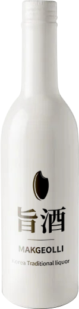
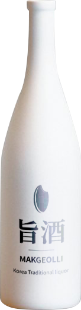

Signature
-
지주 생 막걸리
지주 생 막걸리
지주의 시그니처 제품이자 가장 인기있는 제품 중 하나인 생 막걸리입니다.
막걸리는 한국의 전통주의 한 종류로, 쌀로 밑술을 담가 거기서 청주를 걸러내고 남은 술지게미를 다시 체에 걸러낸 양조주입니다.알코올 함량 :10%
맛 :청량감이 강하며 구수한 맛
재료 :쌀, 누룩, 물, 올리고당, 효모, 정제수
-
지주 찹쌀 막걸리
지주 찹쌀 막걸리
지주의 시그니처 제품이자 가장 인기있는 제품 중 하나인 찹쌀 막걸리입니다.
찹쌀을 불려서 만든 찹쌀 막걸리는 보다 단 맛이 강하며 혀에 착 감기면서 달라붙는 것이 특징입니다.알코올 함량 :8%
맛 :달달하며 농후한 맛
재료 :찹쌀, 누룩, 물, 설탕
-

지주 수제 막걸리
지주 수제 막걸리
지주의 시그니처 제품이자 가장 인기있는 제품 중 하나인 수제 막걸리입니다.
명인이 직접 빚은 수제 막걸리는 적당한 고소함과 청량감으로 누구든지 부담없이 즐기기 좋은 술입니다.알코올 함량 :6%
맛 :은은하게 구수한 맛
재료 :쌀, 누룩, 물
-

지주 밤 막걸리
지주 밤 막걸리
지주의 시그니처 제품이자 가장 인기있는 제품 중 하나인 밤 막걸리입니다.
밤을 넣어 만든 밤 막걸리는 밤의 고소한 향과 맛을 막걸리 특유의 감칠맛과 함께 조화를 이룬 것이 특징입니다.알코올 함량 :6%
맛 :고소한 밤 맛과 톡톡 쏘는 맛
재료 :밤, 쌀, 누룩, 물
Liquor
-
지주 소주(희석식)
지주 소주(희석식)
희석식 소주는 현대 한국에서 가장 대중적인 술의 한 종류입니다.
한국인들에게 가장 친숙한 술인 소주를 깔끔한 맛을 살리고, 목넘김이 부드러운 지주의 소주로 즐겨보세요.알코올 함량 :18%
맛 :깔끔하며 부드러운 맛
재료 :카사바, 고구마, 아스파탐, 자일리톨
-
지주 소주(증류식)
지주 소주(증류식)
증류식 소주는 곡물 등의 전분질 재료를 누룩으로 병행복발효시켜 양조한 청주, 약주나 탁주를 단식증류한 한국의 전통 증류주입니다.
지주의 증류식 소주의 풍부하고 깊은 향과 맛을 느껴보세요.알코올 함량 :33%
맛 :은은한 쌀의 감칠맛과 시원한 맛
재료 :청주(쌀, 고구마)
-
지주 보드카
지주 보드카
지주의 보드카는 곡물과 효소를 섞어 당화시킨 후, 효모를 추가해 발효과정을 거쳐 나온 밑술을 증류한 후 활성탄으로 여과하여 냄새와 맛을 없애고 목넘김이 매우 깔끔한 것이 특징입니다.
알코올 함량 :41%
맛 :깔끔하며 무미함
재료 :옥수수, 밀
-
지주 진
지주 진
지주의 진은 무색 투명한 술로, 옥수수와 호밀을 발효, 증류시킨후 주니퍼베리와 레몬 껍질을 넣어 만들어사 은은하게 솔의향과 맛이 올라오며 입안에 시원함이 퍼지는 것이 특징입니다.
알코올 함량 :44%
맛 :솔향과 함께 시원한 맛과 청량감
재료 :옥수수, 호밀, 주니퍼 베리, 레몬 껍질
-
지주 브랜디
지주 브랜디
지주의 브랜디는 포도주를 4년 이상 증류하여 숙성시켜 만든 증류주입니다.
포도를 주원료로 해서 증류하고 만들어진 술로, 풍부한 향기를 즐길 수 있는 것이 특징입니다.알코올 함량 :38%
맛 :달달한 포도맛과 걸쭉한 맛
재료 :포도, 밑술
-
지주 위스키
지주 위스키
위스키는 맥아의 효소로 곡물 등의 녹말을 포함하고 있는 재료를 당화시키고, 발효 및 증류하여 오크통에 숙성시킨 증류주입니다. 높은 도수에 비해 숙취가 없는 것이 특징입니다.
알코올 함량 :40%
맛 :바닐라와 오크향이 풍부한 맛
재료 :보리 맥아
Fruit
-
지주 배 과실주
지주 배 과실주
배 과실주는 배에 당과 물을 첨가하여 발효시킨 술덧을 여과하여 만든 술입니다.
국내산 배를 사용하여 만든 배 과실주는 척식과 소화불량에 좋으며 과육에 들어있는 펜토산은 장을 자극해 연동운동을 촉진시키고 변비를 예방합니다.알코올 함량 :17%
맛 :달달한 배 맛
재료 :배, 정제수, 설탕, 효모, 주정, 과당
-
지주 딸기 과실주
지주 딸기 과실주
딸기 과실주는 딸기에 당과 물을 첨가하여 발효시킨 술덧을 여과하여 만든 술입니다.
봄 제철과일인 딸기로 담근 딸기 과실주는 비타민 C가 풍부해 피로 회복과 피부 미용, 식욕 증진에 효과가 있습니다.알코올 함량 :16%
맛 :달콤한 딸기 맛
재료 :딸기, 정제수, 설탕, 레몬
-
지주 감 과실주
지주 감 과실주
감 과실주는 감에 당과 물을 첨가하여 발효시킨 술덧을 여과하여 만든 술입니다.
지주의 감 과실주는 감 특유의 달콤하면서도 떫은 맛, 신 맛이 조화를 이루어 독특하고 환상적인 맛을 자랑합니다.알코올 함량 :21%
맛 :감 특유의 신맛과 달콤한 맛
재료 :감, 정제수, 설탕, 과당
-
지주 사과 과실주
지주 사과 과실주
사과 과실주는 사과에 당과 물을 첨가하여 발효시킨 술덧을 여과하여 만든 술입니다.
다량의 산화방지 성분으로 인해 암, 만성질환 등의 예방과 노화방지에 탁활합니다. 또한 비타민C가 많아서 피로회복에 탁월합니다알코올 함량 :15%
맛 :사과의 달달하고 시큼한 맛
재료 :사과, 정제수, 설탕, 효모, 레몬
-

지주 살구 과실주
지주 살구 과실주
살구 과실주는 살구에 당과 물을 첨가하여 발효시킨 술덧을 여과하여 만든 술입니다.
살구에는 구연산과 사과산 등의 유기산의 함량이 높아 피록회복에 좋으며 심장병과 암 예방은 물론 식용증진에도 좋습니다.알코올 함량 :16%
맛 :달달하고 농후한 맛
재료 :살구, 정제수, 설탕
-
지주 복숭아 과실주
지주 복숭아 과실주
복숭아 과실주는 복숭아에 당과 물을 첨가하여 발효시킨 술덧을 여과하여 만든 술입니다.
복숭아는 시력 보호, 피로 해소, 피부 미용, 면연력 개선, 변비 예방 등 다방면으로 탁월한 효과를 보여줍니다.알코올 함량 :15%
맛 :달달한 복숭아 맛
재료 :복숭아, 정제수, 설탕, 효모
-
지주 파인애플 과실주
지주 파인애플 과실주
파인애플 과실주는 파인애플에 당과 물을 첨가하여 발효시킨 술덧을 여과하여 만든 술입니다.
파인애플은 칼로리가 낮아 다이어트에 효과적인 과일입니다. 또한, 설탕을 첨가하지 않아서 다이어트 할 때 마시기 좋은 술입니다.알코올 함량 :20%
맛 :파인애플의 달콤하고 신 맛
재료 :파인애플, 정제수
Limited
-
지주 - 점박이 물범
지주 - 점박이 물범
대한민국의 멸종위기종인 점박이 물범 보호에
기여하기 위한 한정판 막걸리입니다.
지주는 대한민국의 멸종위기종의 보존을 위해서 수익금의 일부를 기부하고 있습니다.
지주의 막걸리와 함께 멸종위기종 보호에도 기여해 보세요.알코올 함량 :8%
맛 :은은하게 구수한 맛
재료 :쌀, 누룩, 물, 설탕
-
지주 - 수달
지주 - 수달
대한민국의 멸종위기종인 수달 보호에
기여하기 위한 한정판 막걸리입니다.
지주는 대한민국의 멸종위기종의 보존을 위해서 수익금의 일부를 기부하고 있습니다.
지주의 막걸리와 함께 멸종위기종 보호에도 기여해 보세요.알코올 함량 :8%
맛 :은은하게 구수한 맛
재료 :쌀, 누룩, 물, 설탕
-
지주 - 나도풍란
지주 - 나도풍란
대한민국의 멸종위기종인 나도풍란 보호에
기여하기 위한 한정판 막걸리입니다.
지주는 대한민국의 멸종위기종의 보존을 위해서 수익금의 일부를 기부하고 있습니다.
지주의 막걸리와 함께 멸종위기종 보호에도 기여해 보세요.알코올 함량 :8%
맛 :은은하게 구수한 맛
재료 :쌀, 누룩, 물, 설탕
-
지주 - 한란
지주 - 한란
대한민국의 멸종위기종인 한란 보호에
기여하기 위한 한정판 막걸리입니다.
지주는 대한민국의 멸종위기종의 보존을 위해서 수익금의 일부를 기부하고 있습니다.
지주의 막걸리와 함께 멸종위기종 보호에도 기여해 보세요.알코올 함량 :8%
맛 :은은하게 구수한 맛
재료 :쌀, 누룩, 물, 설탕